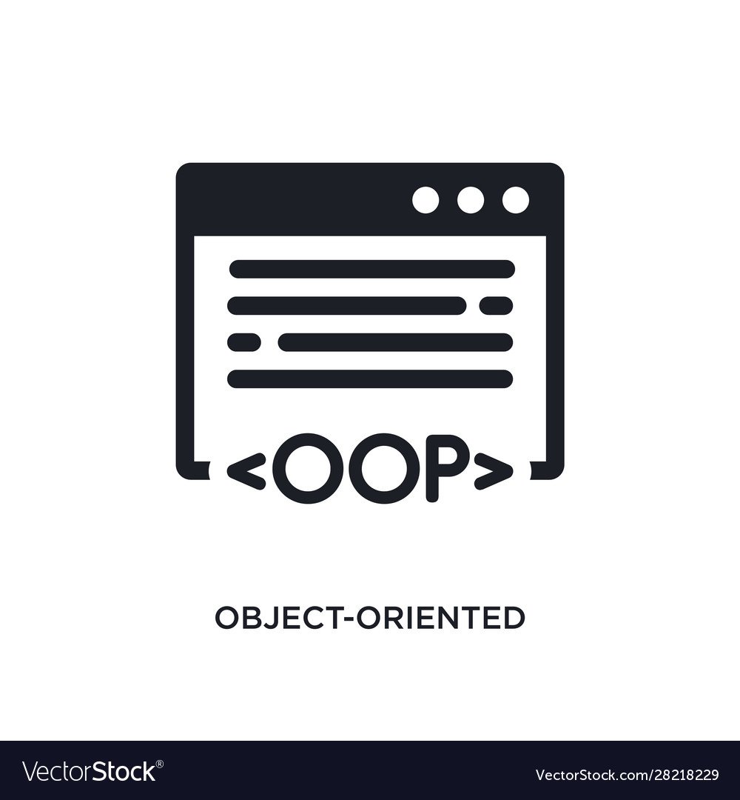

Mastering Core Java (Java A)
Through the Java A course, I gained a strong foundation in object-oriented programming (OOP),
focusing on core Java principles such as classes, objects, inheritance, polymorphism, and exception
handling. These skills allow me to write clean, efficient, and maintainable code while solving
complex problems with a logical approach.

Advanced Java Skills (Java B)
Building on my foundational knowledge, Java B introduced me to advanced concepts such as
multithreading, file handling, and networking. I also worked on creating modular programs, enhancing
performance, and writing reusable code. This experience has prepared me for real-world application
development and efficient problem-solving.
Database Managment Expertise
Through the Database Management course, I developed the ability to design, query, and maintain
relational databases using SQL. I learned to connect databases to applications, optimize queries for
performance, and implement secure data handling techniques. This knowledge bridges the gap between
data storage and application logic in software development.
Web Development
In the Web Development course, I learned the fundamentals of HTML, CSS, and JavaScript, enabling me
to create responsive and visually appealing web interfaces. This skill complements my backend
knowledge, allowing me to build full-stack solutions and collaborate effectively with front-end
developers.
Organization and Structure
One of the most valuable competencies I've gained during my studies is the ability to structure and
organize projects effectively. By adhering to best practices such as clean code principles,
modularization, and version control, I ensure that projects are scalable, maintainable, and easy to
collaborate on.